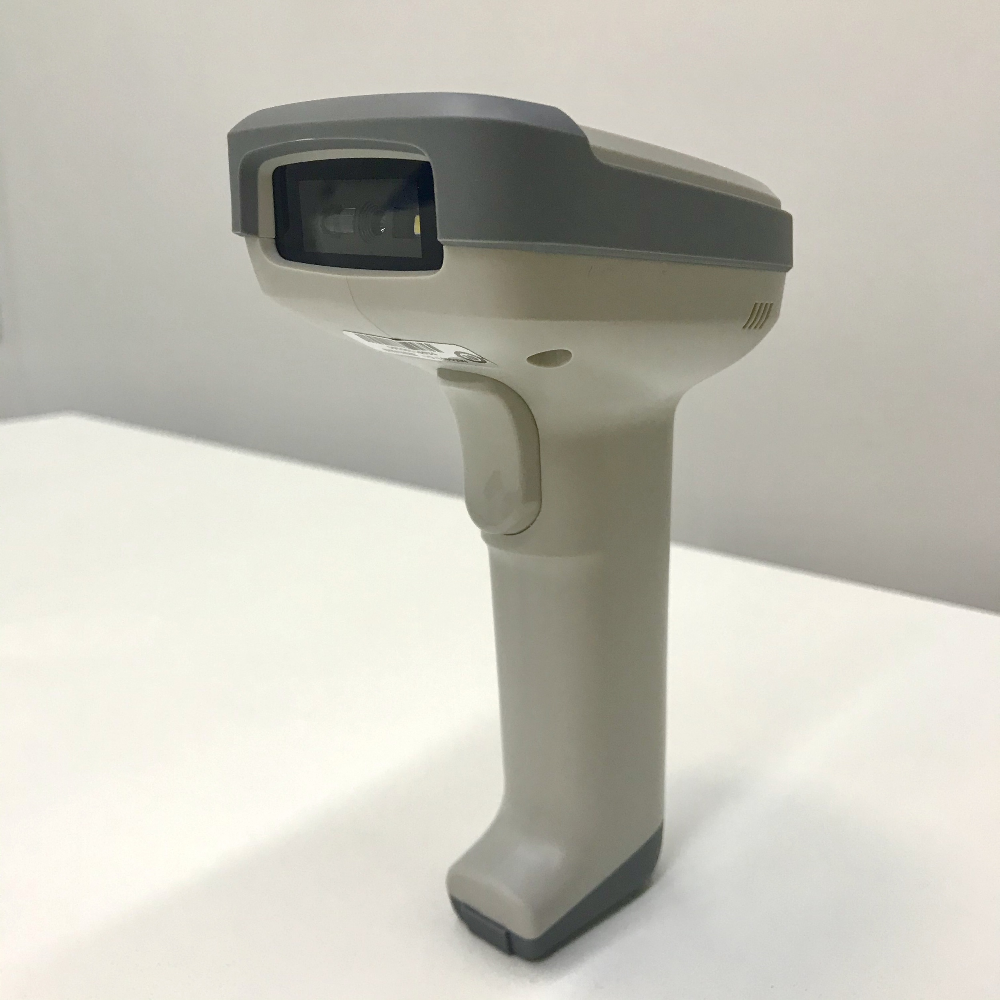
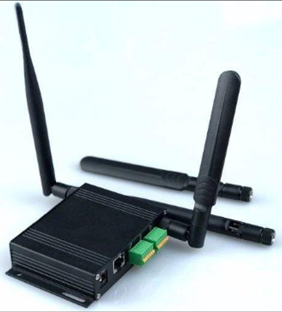

{% extends "products.html" %}
{% block t %} Blockchain Intelligent Hardware {% endblock t %}
{% block description %}
IoT + Blockchain
{% endblock description %}
{% block img %}
 {% endblock img %}
{% block body %}
{% endblock img %}
{% block body %}
Blockchain FPGA algorithm terminal
Product Features
-
1 28nm FPGA chip computing power board
-
1 Raspberry Pi main control board
-
Support multiple algorithms for re-downloading
- Power consumption: <40W
Market positioning
-
According to the needs of the blockchain operation team, provide variable algorithm blockchain terminal solution node solution services
-
Supports downloading of multiple algorithms, and the algorithm can be changed regularly according to the needs of the operation team to prevent computing power hijacking
Blockchain Scanner
Product Features
-
Built-in 32-bit secure blockchain security chip
-
Supports multiple blockchain security algorithms
-
Support 2G wireless Internet access and WiFi connection, which can be seamlessly connected with the existing user system
-
Support various QR code scanning forms, and connect with the user-specified system
Product service plan
-
According to the user's product needs, various specifications of blockchain code scanners can be customized

Blockchain Data Transfer Module (DTU)
Product Features
-
Built-in 32-bit secure blockchain security chip
-
Supports multiple blockchain security algorithms
-
Support 485/UART data interface
-
Support mobile/Unicom/Telecom operators, support 2G/4G access
-
Support local SIM card/ESIM access, built-in cloud SIM remote configuration technology, can flexibly schedule traffic requirements according to user needs, users do not need to buy SIM cards by themselves
-
4G bandwidth up to 150M, meeting high-bandwidth data uplink requirements such as monitoring and remote server synchronization
Product service plan
-
Can cooperate with traditional intelligent hardware, seamlessly support traditional intelligent hardware on-chain
-
Support multiple algorithm downloads, which can be customized according to the needs of the operation team

{% endblock body %}